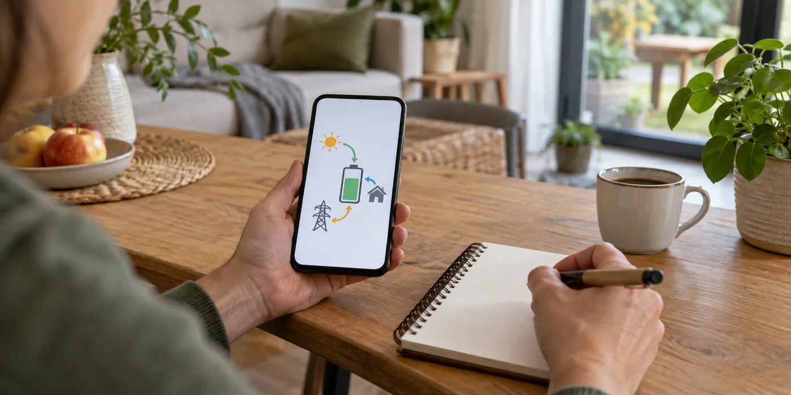

Vraag de energiestromen te benoemen
Laat zien welke waarde productie, netafname, injectie of batterijverbruik voorstelt. Vraag over welke periode totalen worden berekend. Een laadpercentage is iets anders dan een gemeten hoeveelheid energie. Noteer de uitleg bij screenshots zodat je later niet op basis van kleur of richting alleen conclusies trekt.
Vergelijk tijdvakken zorgvuldig
Gebruik dezelfde dag of hetzelfde kwartier als je apps naast elkaar legt. Fluvius biedt meterwaarden van afname en injectie; die zijn niet automatisch identiek aan alle totalen in een batterij-app. Verschillen kunnen met meetpunt of definitie samenhangen. Laat onverklaarde verschillen beoordelen en vermijd dat je zelf instellingen of sensoren verplaatst.

Meld afwijkingen als dossier
Noteer tijdstip, batterijstand en welke toestellen aan stonden. Vraag welke waarden normaal zijn en welke een controle vereisen. Spreek af wie de regeling en meting opvolgt. Het doel is niet elke seconde te controleren, maar een begrijpelijke beginsituatie vast te leggen waarmee latere vragen beter onderzocht kunnen worden.
Vraag een overzicht van actieve instellingen
Laat de installateur benoemen welk doel de regeling volgt en welke instellingen door jou aangepast mogen worden. Bewaar de beginsituatie met datum. Als de regeling later verandert, noteer je dat naast de meetgegevens. Daarmee voorkom je dat twee periodes als identiek worden vergeleken terwijl het systeem anders aangestuurd werd. Laat meetvragen en regelvragen apart beantwoorden: een juiste meting kan nog steeds gedrag tonen dat niet overeenkomt met jouw verwachting.
Een praktisch voorbeeld
De batterij-app toont een laadstroom terwijl je netteller afname registreert. Vraag eerst of netladen op dat moment bedoeld was. Een vermeende afwijking kan pas beoordeeld worden met de actieve regeling erbij.
Illustratief scenario, geen klantcase.
Neem dit mee naar je gesprek
- Betekenis van elke grafiek
- Dezelfde periode vergelijken
- Meetpunt en tijdseenheid duidelijk
- Afwijkingen met datum melden
Veelgestelde vraag
Kan ik sensoren zelf omdraaien als de grafiek vreemd lijkt?
Nee. Laat meting en instellingen door de installateur controleren.
Bron en achtergrond
Fluvius: officiële of technische achtergrond bij dit onderwerp ↗
Geraadpleegd op 13 oktober 2026. De praktische checklist en het voorbeeld zijn redactionele uitwerkingen. Fabrikantinformatie geldt voor de beschreven producten; ze is geen algemene garantie voor andere systemen.
Wat betekent dit voor jouw woning?
Gebruik de calculator voor een eerste indicatie. Een vakman beoordeelt jouw situatie en bevestigt de uitvoering en definitieve prijs.
Bekijk de thuisbatterijcalculator →